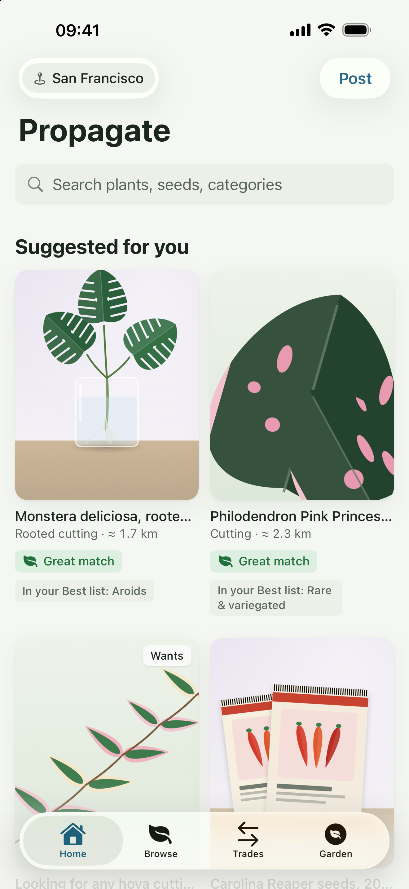
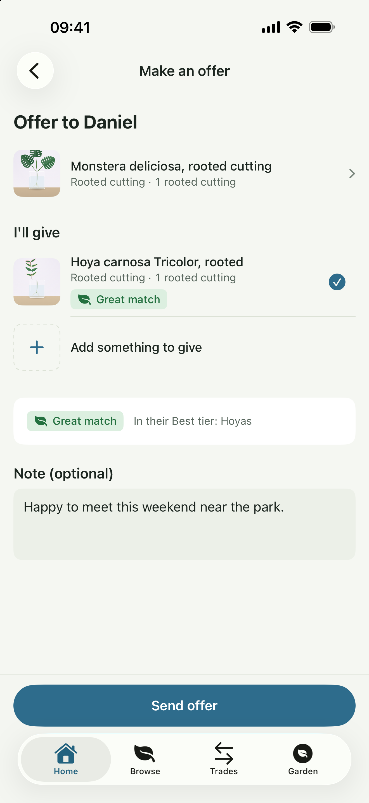

જે ઉગી રહ્યું છે તેને વહેંચો.
કોઈ ઓફર પોસ્ટ કરો અથવા તમે જે શોધી રહ્યા છો તે. ફોટા ઉમેરો અને નજીકના લોકોને જણાવો કે તમારી પાસે શું છે.
જ્યારે તમે વહેંચો છો, ત્યારે સારી વસ્તુઓ ઉગે છે.
તમારો આગામી છોડ તમારા કરતાં વધુ નજીક છે.
તમારા શહેરના અન્ય લોકો સાથે છોડ, કટિંગ અને બીજની આપ-લે કરો. ઓછી ખરીદી અને વધુ વહેંચણી - અને ઉગાડવા માટે કંઈક નવું.
મફત છે, ફક્ત વિનિમય જ થઈ શકે છે, અને તે ફક્ત 18 વર્ષથી વધુ વયના લોકો માટે જ છે.


એપ્લિકેશનનો સ્ક્રીનશૉટ
તમને આ શા માટે ગમશે
કોઈ ઓફર પોસ્ટ કરો અથવા તમે જે શોધી રહ્યા છો તે. ફોટા ઉમેરો અને નજીકના લોકોને જણાવો કે તમારી પાસે શું છે.
છોડ, પ્રકાર અથવા અંતર પ્રમાણે શોધો. તમારા પોતાના કટિંગની ઓફર કરો, પ્રશ્ન પૂછો અને સાથે મળીને આપ-લે પર સંમત થાઓ.
એક જાહેર સંમેલનનું આયોજન કરો, વિનિમય પૂર્ણ કરો અને સમીક્ષા આપો. તમારા પ્રોફાઇલમાં ફક્ત તમારા શહેરનું જ નામ દેખાશે, તમારું સરનામું નહીં.
એક નજર નાખો
વાસ્તવિક સ્ક્રીન. અંદરની બાબતોનો વધુ સારો અનુભવ.

FAQ
શરૂ કરતા પહેલા જવાબો મેળવો
ના. Propagate માત્ર આપલે માટે છે. દરેક પ્રસ્તાવમાં બંને પક્ષ શું આપશે તે દેખાય છે. એપમાં કોઈ ચુકવણી થતી નથી.
છોડ, કટિંગ, બીજ, ભાગો અને બાગકામની સામગ્રી, જેમ કે વાસણો અને માટી. પોસ્ટ કરતા પહેલા સમુદાયના નિયમો વાંચી લો.
ના. તમારા પ્રોફાઇલમાં ફક્ત તમારા શહેરનું નામ દેખાશે. જો તમે તમારા સ્થાન વિશે માહિતી આપવાનું પસંદ કરો છો, તો તે લગભગ એક કિલોમીટરની નજીક દર્શાવવામાં આવશે. જાહેર સ્થળોએ મુલાકાત ગોઠવો.
Propagate એક નવો સમુદાય છે. ઉપલબ્ધતા તમારા શહેર પર આધાર રાખે છે. વિનિમય માટે તમારી પહેલી ઑફર અથવા તમે શોધતા છોડ વિશે પોસ્ટ કરો અને બીજા છોડપ્રેમીને જોડાવા આમંત્રિત કરો.
મફત છે, ફક્ત વિનિમય જ થઈ શકે છે, અને તે ફક્ત 18 વર્ષથી વધુ વયના લોકો માટે જ છે.
આ ફક્ત 18 વર્ષથી વધુ વયના લોકો માટે જ છે. દિવસના સમયે જાહેર સ્થળોએ મુલાકાત કરો અને કોઈ મિત્રને કહો કે તમે ક્યાં જઈ રહ્યા છો. સમુદાયની સુવિધાઓ માટે આઈક્લાઉડ (iCloud) ની જરૂર છે.